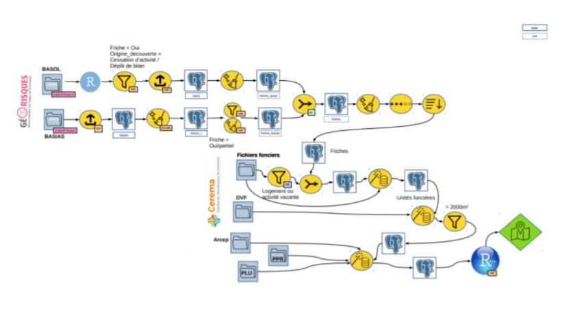

Chapitre 3 Traitement de la donnée
Dans ce notebook, nous allons préparer la donnée, afin d’obtenir la donnée transformée escomptée, à savoir un flux d’artificialisation par commune et par année.
3.1 Lecture des données
Lisons les données de flux
library(tidyverse)
flux <- read_csv("data/obs_artif_conso_com_2009_2020_V2.csv")3.2 Sélection des colonnes
Nous nous intéressons aux flux entre années et allons sélectionner seulement les colonnes utiles, à savoir, les colonnes art09mix10, art10mix11, etc…
myCols <- names(flux)[grep("^art[0-9]{2}\\S+[0-9]{2}$", names(flux))]
myCols [1] "art09act10" "art09hab10" "art09mix10" "art09inc10" "art10act11"
[6] "art10hab11" "art10mix11" "art10inc11" "art11act12" "art11hab12"
[11] "art11mix12" "art11inc12" "art12act13" "art12hab13" "art12mix13"
[16] "art12inc13" "art13act14" "art13hab14" "art13mix14" "art13inc14"
[21] "art14act15" "art14hab15" "art14mix15" "art14inc15" "art15act16"
[26] "art15hab16" "art15mix16" "art15inc16" "art16act17" "art16hab17"
[31] "art16mix17" "art16inc17" "art17act18" "art17hab18" "art17mix18"
[36] "art17inc18" "art18act19" "art18hab19" "art18mix19" "art18inc19"
[41] "art19act20" "art19hab20" "art19mix20" "art19inc20"3.3 Transformation du format wide vers long
Nous utiliserons ggplot2 pour représenter les données. Nous aurons besoin, avant d’utiliser les données, de passer d’un format wide (en largeur) à un format long (en longueur).
En effet, les noms de colonnes, comme art19hab20 ou art13mix14 portent en eux des attributs : type de flux, et année du flux, que nous aimerions bien voir apparaître dans les cellules de notre tableau.
Par exemple, pour art19hab20, l’année du flux est l’année 2019 et concerne les flux vers l’habitat. On pourrait imaginer avoir une colonne pour l’année du flux, et une colonne pour son type.
Pour art13mix14, le flux est concerne les flux d’artificialisation vers le mixte pour l’année 2013.
Voici la différence entre un fichier de type wide et un fichier de type long :
3.3.1 Wide
| id | nom | sport | ville |
|---|---|---|---|
| 1 | mathieu | squash | Aix-en-Provence |
3.3.2 Long
| id | variable | valeur |
|---|---|---|
| 1 | nom | mathieu |
| 1 | sport | squash |
| 1 | ville | Aix-en-Provence |
Dans notre cas, nous passerions de cette structure : | idcom | art19hab20 | | – | – | | 13001 | 111096 |
à cette structure
| idcom | year | type | value |
|---|---|---|---|
| 13001 | 2019 | habitat | 111096 |
3.3.3 Transformation au format long avec gather
Prenons l’exemple d’Aix en Provence. Les données sont dans un format wide (le plus commun, avec les variables en colonnes) :
df <- flux %>% filter(idcom == "13001")
df[, c("idcom", "idcomtxt", myCols)]# A tibble: 1 x 46
idcom idcomtxt art09act10 art09hab10 art09mix10 art09inc10 art10act11
<chr> <chr> <dbl> <dbl> <dbl> <dbl> <dbl>
1 13001 Aix-en-Provence 70439 223015 21156 2502 70440
# ... with 39 more variables: art10hab11 <dbl>, art10mix11 <dbl>,
# art10inc11 <dbl>, art11act12 <dbl>, art11hab12 <dbl>, art11mix12 <dbl>,
# art11inc12 <dbl>, art12act13 <dbl>, art12hab13 <dbl>, art12mix13 <dbl>,
# art12inc13 <dbl>, art13act14 <dbl>, art13hab14 <dbl>, art13mix14 <dbl>,
# art13inc14 <dbl>, art14act15 <dbl>, art14hab15 <dbl>, art14mix15 <dbl>,
# art14inc15 <dbl>, art15act16 <dbl>, art15hab16 <dbl>, art15mix16 <dbl>,
# art15inc16 <dbl>, art16act17 <dbl>, art16hab17 <dbl>, art16mix17 <dbl>, ...Pour transformer au format long, nous utilisons la fonction gather :
df <- df[, c("idcom", "idcomtxt", myCols)]
df <- gather(df,
"variable", # key
"value", # value
myCols) # variables
df# A tibble: 44 x 4
idcom idcomtxt variable value
<chr> <chr> <chr> <dbl>
1 13001 Aix-en-Provence art09act10 70439
2 13001 Aix-en-Provence art09hab10 223015
3 13001 Aix-en-Provence art09mix10 21156
4 13001 Aix-en-Provence art09inc10 2502
5 13001 Aix-en-Provence art10act11 70440
6 13001 Aix-en-Provence art10hab11 223016
7 13001 Aix-en-Provence art10mix11 21157
8 13001 Aix-en-Provence art10inc11 2499
9 13001 Aix-en-Provence art11act12 83789
10 13001 Aix-en-Provence art11hab12 343830
# ... with 34 more rowsLa colonne variable comporte des valeurs telles que art09hab10 pour le flux d’artificialisation vers l’habitat de 2009 à 2010 :
unique(df$variable) [1] "art09act10" "art09hab10" "art09mix10" "art09inc10" "art10act11"
[6] "art10hab11" "art10mix11" "art10inc11" "art11act12" "art11hab12"
[11] "art11mix12" "art11inc12" "art12act13" "art12hab13" "art12mix13"
[16] "art12inc13" "art13act14" "art13hab14" "art13mix14" "art13inc14"
[21] "art14act15" "art14hab15" "art14mix15" "art14inc15" "art15act16"
[26] "art15hab16" "art15mix16" "art15inc16" "art16act17" "art16hab17"
[31] "art16mix17" "art16inc17" "art17act18" "art17hab18" "art17mix18"
[36] "art17inc18" "art18act19" "art18hab19" "art18mix19" "art18inc19"
[41] "art19act20" "art19hab20" "art19mix20" "art19inc20"3.4 Année et destination du flux
Nous allons extraire l’année et le type (habitat, activité, mixte, inconnu) depuis le champ variable :
df$year <- gsub("art([0-9]{2})(\\S+)[0-9]{2}", "20\\1", df$variable)
df$type <- gsub("art([0-9]{2})(\\S+)[0-9]{2}", "\\2", df$variable)Voici le résultat:
df %>% head# A tibble: 6 x 6
idcom idcomtxt variable value year type
<chr> <chr> <chr> <dbl> <chr> <chr>
1 13001 Aix-en-Provence art09act10 70439 2009 act
2 13001 Aix-en-Provence art09hab10 223015 2009 hab
3 13001 Aix-en-Provence art09mix10 21156 2009 mix
4 13001 Aix-en-Provence art09inc10 2502 2009 inc
5 13001 Aix-en-Provence art10act11 70440 2010 act
6 13001 Aix-en-Provence art10hab11 223016 2010 hab 3.5 Retraitement
Améliorons le champ type pour avoir des libellés plus parlants :
df <- df %>% mutate(type = case_when(
type == "hab" ~ "Habitat",
type == "act" ~ "Activité",
type == "mix" ~ "Mixte",
type == "inc" ~ "Inconnu",
))Au final, nous n’avons plus besoin de la variable variable :
df$variable <- NULLVoici notre fichier df au final :
df# A tibble: 44 x 5
idcom idcomtxt value year type
<chr> <chr> <dbl> <chr> <chr>
1 13001 Aix-en-Provence 70439 2009 Activité
2 13001 Aix-en-Provence 223015 2009 Habitat
3 13001 Aix-en-Provence 21156 2009 Mixte
4 13001 Aix-en-Provence 2502 2009 Inconnu
5 13001 Aix-en-Provence 70440 2010 Activité
6 13001 Aix-en-Provence 223016 2010 Habitat
7 13001 Aix-en-Provence 21157 2010 Mixte
8 13001 Aix-en-Provence 2499 2010 Inconnu
9 13001 Aix-en-Provence 83789 2011 Activité
10 13001 Aix-en-Provence 343830 2011 Habitat
# ... with 34 more rows3.6 Fonction getStatsFlux
Créons une fonction qui retourne les flux pour une commune donnée à partir de son code INSEE :
getStatsFlux <- function(flux, codeInsee) {
# Filtre par commune
df <- flux %>% filter(idcom == codeInsee)
# Colonnes intéressantes
myCols <- names(flux)[grep("^art[0-9]{2}\\S+[0-9]{2}$", names(flux))]
df <- df[, c("idcom", "idcomtxt", myCols)]
# Long format
df <- df %>% gather("variable", # key
"value", # value
myCols) # variables
# Année et type
df$year <- gsub("art([0-9]{2})(\\S+)[0-9]{2}", "20\\1", df$variable)
df$type <- gsub("art([0-9]{2})(\\S+)[0-9]{2}", "\\2", df$variable)
# Renomme les valeurs de type
df <- df %>% mutate(type = case_when(
type == "hab" ~ "Habitat",
type == "act" ~ "Activité",
type == "mix" ~ "Mixte",
type == "inc" ~ "Inconnu"))
# Réagence les colonnes
df <- df[, c("idcom", "idcomtxt", "year", "type", "value")]
return(df)
}
flux %>% getStatsFlux("13001")# A tibble: 44 x 5
idcom idcomtxt year type value
<chr> <chr> <chr> <chr> <dbl>
1 13001 Aix-en-Provence 2009 Activité 70439
2 13001 Aix-en-Provence 2009 Habitat 223015
3 13001 Aix-en-Provence 2009 Mixte 21156
4 13001 Aix-en-Provence 2009 Inconnu 2502
5 13001 Aix-en-Provence 2010 Activité 70440
6 13001 Aix-en-Provence 2010 Habitat 223016
7 13001 Aix-en-Provence 2010 Mixte 21157
8 13001 Aix-en-Provence 2010 Inconnu 2499
9 13001 Aix-en-Provence 2011 Activité 83789
10 13001 Aix-en-Provence 2011 Habitat 343830
# ... with 34 more rowsEnregistrons cette fonction dans le fichier helpers.R
3.7 Data Engineering
Pas mal d’étapes de préparation sont parfois nécessaires avant de créer des applications de dataviz.

Voici la chaîne de données, assez conséquente, pour Cartofriches : 